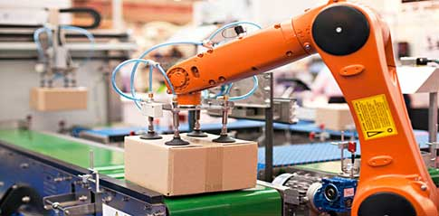
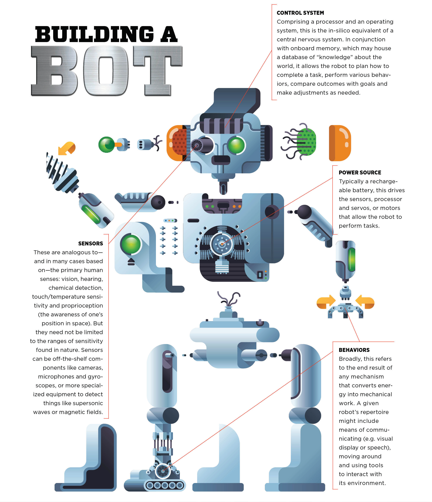

Home
Information
About
Uses of Robotics

Robots are used in various industries to improve efficiency and safety. Some of the common uses include:
- Manufacturing: Robots help in assembly lines to make products faster and more accurately.
- Healthcare: Surgical robots assist doctors in performing complex surgeries.
- Space Exploration: Robots are used to explore planets and gather data in space missions.
Robots are widely used in such industries as automobile manufacture to perform simple repetitive tasks, and in industries where work must be performed in
environments hazardous to humans. Many aspects of robotics involve artificial intelligence; robots may be equipped with the equivalent of human senses such
as vision, touch, and the ability to sense temperature. Some are even capable of simple decision making, and current robotics research is geared toward devising
robots with a degree of self-sufficiency that will permit mobility and decision-making in an unstructured environment. Today’s industrial robots do not resemble
human beings; a robot in human form is called an android.
The Future of Robotics

The future of robotics looks bright. Robots will continue to evolve and assist in more areas of our lives, from our homes to workplaces. Advances in AI and machine
learning will make robots smarter and more capable. Rather than simply automating repetitive tasks, future robots will be capable of learning, adapting, and working
alongside humans in more dynamic and meaningful ways. Today's industrial robots excel at repetitive tasks. Tomorrow's robots will be flexible, learning, and adapting in real time. Pop culture is perhaps the main culprit for the public’s warped perception of the future of robotics. Although figures like C3PO in Star Wars, Data in Star Trek and the cyborg in The Terminator have given robotics some flashy mainstream appeal, they have also established narrow expectations for what robots could be and accomplish in the future.
“I’m never going to rule stuff out,” said Blake Hannaford, robotics professor at the University of Washington in Seattle. “But if you look back on science fiction from the ’50s and ’60s and compare it to today, it really missed the mark.”
For better or for worse, robots have defied human expectations. It’s unlikely that we’ll have to beware of Schwarzenegger-esque killer robots anytime soon, but even so, the future of robotics is sure to have surprises in store.
Types of Robots

Autonomous Mobile Robots (AMRs)-
AMRs move throughout the world and make decisions in near real-time as they go. Technologies such as sensors and cameras help them ingest information about their surroundings. Onboard processing equipment helps them analyze it and make an informed decision—whether that’s moving to avoid an oncoming worker, picking precisely the right parcel, or selecting an appropriate surface to disinfect. They’re mobile solutions that require limited human input to do their job. Learn more about AMRs.
Automated Guided Vehicles (AGVs)-
While AMRs traverse environments freely, AGVs rely on tracks or predefined paths and often require operator oversight. These are commonly used to deliver materials and move items in controlled environments such as warehouses and factory floors.
Articulated Robots-
Articulated robots (also known as robotic arms) are meant to emulate the functions of a human arm. Typically, these can feature anywhere from two to 10 rotary joints. Each additional joint or axis allows for a greater degree of motion—making these ideal for arc welding, material handling, machine tending, and packaging. Learn more about articulated robots and robotic arms.
Humanoids-
While many mobile humanoid robots may technically fall under the domain of an AMR, the term is used to identify robots that perform human-centric functions and often take human-like forms. They use many of the same technology components as AMRs to sense, plan, and act as they carry out tasks such as providing directions or offering concierge services.
Cobots-
Cobots are designed to function alongside or directly with humans. While most other types of robots perform their tasks independently, or in strictly isolated work areas, cobots can share spaces with workers to help them accomplish more. They’re often used to eliminate manual, dangerous, or strenuous tasks from day-to-day workflows. In some cases, cobots can operate by responding to and learning from human movements.
Hybrids-
The various types of robots are often combined to create hybrid solutions that are capable of more complex tasks. For example, an AMR might be combined with a robotic arm to create a robot for handling packages inside of a warehouse. As more functionality is combined into single solutions, compute capabilities are also consolidated.
Conclusion
Robotics is already changing the way we live and work. As technology advances, robots will play an even larger role in society, improving efficiency, safety, and even our daily lives.